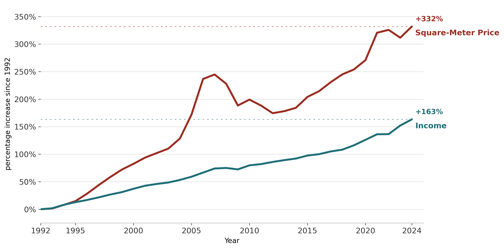
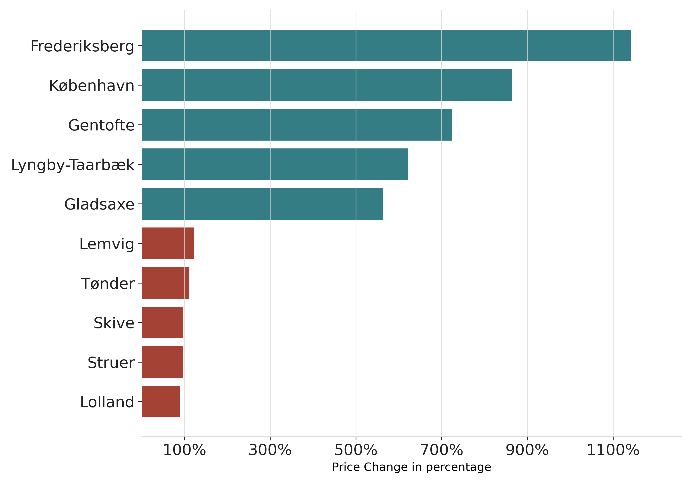
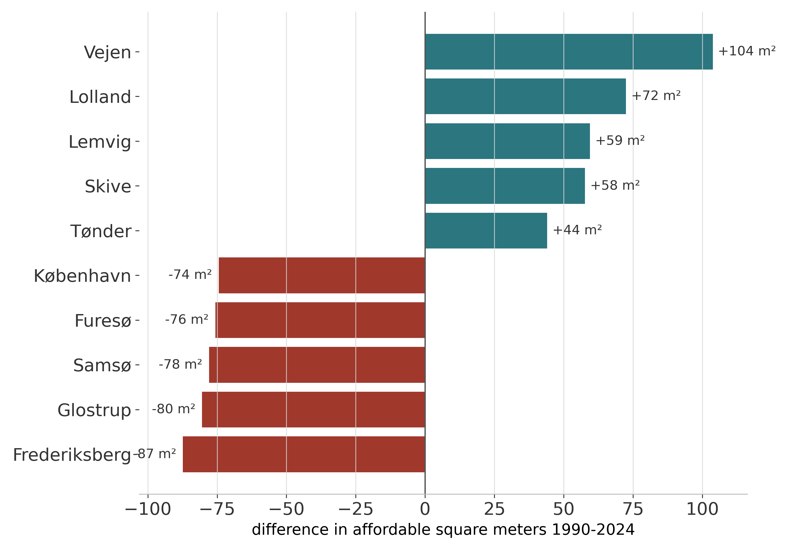

Is the Danish Housing Market Really Closing?
A data-driven study of how the housing prices have changed over the last 34 years across Denmark.
By Jacob Borregaard Eriksen, s181487, May 2026
Lately, I often hear my peers talk about how the housing market, especially in big cities like Copenhagen, is becoming increasingly less affordable for first-time buyers, teachers, nurses and other middle-class workers. This concern is also reflected in the media, and it was one of the key topics in the recent 2025 municipal election1. Many feel that they do not have the same opportunities as their parents’ generation.
To move beyond anecdote and sentiment, I have analyzed the housing market's evolution since 1992. Using annual square meter prices and average income data, this study evaluates the reality of housing affordability. The data reveals a story of two Denmarks: one where property is a goldmine, and another where it remains within reach.
How Has the Market Developed since 1992?
I have gathered the yearly development of average square-meter prices across all the different municipalities in Denmark from Statistics Denmark since 1992 to gain insight in how the market has developed over the last 34 years. The overall trend as can be seen below is unsurprisingly that the prices have increased a lot over the period. To put this increase into context, I have also collected data on the development of pre-tax income. The idea is that if incomes have risen at a similar rate, housing may be as affordable today as it was in 1992, when my parents bought their house.
Figure 1: Development of Housing Prices vs. Average Income since 1992

The above figure confirms that the feeling of a closing housing market is not just a sentiment but is reflected in the data. It shows a widening gap between property prices and average incomes over the last 34 years, where the average square-meter price has increased with 332%, while the wages have only been increased by 163%, meaning that you can get significantly less for an average salary today, than you could 34 years ago. Notably, the housing market appears significantly more volatile than wages. While income remained relatively stable, housing prices skyrocketed up to the financial crisis in 2008 when it collapsed and again during COVID-19. This visualization highlights both a challenging long-term trend and the dramatic moments of market instability.
These national averages only tell part of the story. While the gap is widening on average, it is the geographic distribution of this growth that truly reveals a divided Denmark. To understand the reality for a first-time buyer today, we must look beyond the national trend and examine the significant contrasts between individual municipalities, where prices have exploded in parts of the country, while it has been relatively stable in other places.
The Geography of Affordability: From National Trends to Municipal Insights
While most Danes can guess where prices have climbed the most and where they have lagged, but the sheer amount of the difference between those two is shocking. In this section, I examine the municipalities at both ends of the spectrum. To add depth, I have quantified affordability as a metric based on a common mortgage rule of thumb: how many square meters an average salary can purchase in each municipality. By calculating a purchasing power of four times the average annual income, I account for the fact that more expensive areas often correlate with higher local wages. Using this metric, I can investigate where you truly get more, or significantly less, for your money compared to 1992.


The contrast between rural and capital-area municipalities is clear. Rural municipalities such as Lolland, Struer and Skive are found among the lowest price increases, while the top is dominated by Copenhagen-area municipalities such as Frederiksberg and Copenhagen. The difference is huge: Frederiksberg has seen square-meter prices increase by more than 1100%, compared to only 81% in Lolland from 1992 to 2024. What makes this gap even more striking is that the average square-meter price difference between the two was only 3,600 DKK in 1992, but had risen to 81,488 DKK by 2024. For buyers today, this is a double-edged sword. In Lolland, an average salary can buy about 72 more square meters in 2024 than in 1992, meaning it is not all bad for first-time buyers. In Frederiksberg, however, an average salary buys about 67 fewer square meters, which is a lot given that many properties there are relatively small apartments. Overall, the Copenhagen area has become much less affordable than in 1992.
But the extremes only tell part of the story. To understand whether this is a pattern limited to a few municipalities or a broader reshaping of the Danish housing market, we need to zoom out and look at the full map.
Map of changes in Danish municipalities
To visualize the geographic distribution of changes in housing prices and affordability, I have created three interactive maps showing square-meter price growth, affordability change, and net migration for each municipality from 1992 to 2024. The idea is that one possible explanation for the growing gap between big cities and rural areas is migration: as more people move into cities, demand increases, which can push prices up.
The maps allow the reader to hover over each municipality and see the specific changes in price, affordability, and migration, giving a more detailed picture of how different parts of Denmark have evolved over time.
A Divided Denmark
The maps make the divide clear. The Danish housing market has not simply become more expensive everywhere. Instead, the strongest price growth is concentrated in and around the larger cities, while many rural and peripheral municipalities have seen far more modest increases.
One possible explanation is migration. More people have moved towards the larger cities, increasing demand in areas where housing supply is already limited. Copenhagen has had a net migration of +46%, and Aarhus +41.2%, while Lolland and Tønder have seen negative net migration of -27.2% and -18.8%. This helps explain why prices have exploded in the cities, while remaining more stable in several rural municipalities.
Another explanation is affordability itself. In municipalities where an average salary buys fewer square meters than before, the market has become harder to enter, especially for first-time buyers. In some rural municipalities, affordability has improved, but this may also reflect weaker demand and fewer people moving there. In that sense, improved affordability can be both an opportunity and a sign of a less pressured housing market.
Explore a municipality
Select one of the municipalities included in the data and explore how housing prices, income, and net migration have changed from 1992 to 2024. Bornholm and Ærø are excluded due to missing data.
References
- DR. (2025). Danskerne skal til kommunalvalg: Se hvilke emner vælgerne går mest op i. Link
- Statistics Denmark (Danmarks Statistik). (2025). 20331: Kvadratmeterpris for ejerlejligheder. Accessed May 10, 2026, from Link
- Statistics Denmark (Danmarks Statistik). (2025). 20326: Kvadratmeterpris for enfamiliehuse. Accessed May 10, 2026, from Link
- Statistics Denmark (Danmarks Statistik). (2025). BM010: Huspriser og omkostninger ved boligkøb. Accessed May 10, 2026, from Link